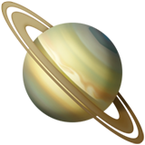

<!DOCTYPE html>
<html lang="en">

<head>
    <meta charset="utf-8">
    <meta name="viewport" content="width=device-width, initial-scale=1">
    <title>이새힘 Saehim Lee</title>
    <link rel="stylesheet" href="../assets/built/screen.css%3Fv=aee19b215e.css">
    <link rel="stylesheet" href="https://cdnjs.cloudflare.com/ajax/libs/tocbot/4.13.5/tocbot.min.css" integrity="sha512-SFw7k74K3983tyOlJIHa8atr9Ppef3Kix5cmifwzU7ZdtU2E0FRuOVRtd3ENpMJ8sNCie5hlb/0j23efcdQJXA==" 	crossorigin="anonymous" referrerpolicy="no-referrer" />
    
    <link rel="stylesheet" href="https://cdnjs.cloudflare.com/ajax/libs/tocbot/4.12.3/tocbot.css">
    
    <style>
        .gh-content {
            position: relative;
        }

        .gh-toc > .toc-list {
            position: relative;
        }

        .toc-list {
            overflow: hidden;
            list-style: none;
            font-size: smaller;
        }

        @media (min-width: 1300px) {
            .gh-sidebar {
                position: absolute; 
                top: 10vmin;
                bottom: 0;
                margin-top: 4vmin;
                grid-column: wide-start / main-start; /* Place the TOC to the left of the content */
            }
        
            .gh-toc {
                position: sticky; /* On larger screens, TOC will stay in the same spot on the page */
                top: 4vmin;
            }
        }

        .gh-toc .is-active-link::before {
            background-color: var(--ghost-accent-color); /* Defines TOC   accent color based on Accent color set in Ghost Admin */
        } 
    </style>
    <link rel="icon" href="../content/images/size/w256h256/2023/08/ringed-planet_1fa90.png" type="image/png">
    <link rel="canonical" href="index.html">
    <meta name="referrer" content="no-referrer-when-downgrade">
    
    <meta property="og:site_name" content="new-pow&#x27;s space">
    <meta property="og:type" content="website">
    <meta property="og:title" content="이새힘 Saehim Lee">
    <meta property="og:description" content="Github : @new-pow
Blog : new-pow.tistory.com
Email : i.newpow@gmail.com


About me


🙌함께 성장하는 것을 즐거워하는 이새힘입니다.

 * 기능을 구현하고 조금씩 개선시키는 것을 진정으로 좋아합니다. 새로운 기술을 배우는 것을 즐기고 작은 영역부터 적용합니다.
 * 주어진 업무에 국한되는 것이 아니라 문제에 몰입하고 한 걸음 더 고민하는 것에 집중력을 발휘합니다.
 * 꾸준히 성실하게 학습하고">
    <meta property="og:url" content="http://localhost:2369/resume/">
    <meta property="og:image" content="http://localhost:2369/content/images/2023/08/Carina_Dwarf_Galaxy.jpeg">
    <meta property="article:published_time" content="2023-08-19T20:44:17.000Z">
    <meta property="article:modified_time" content="2023-11-05T08:37:44.000Z">
    <meta property="article:publisher" content="https://www.facebook.com/ghost">
    <meta name="twitter:card" content="summary_large_image">
    <meta name="twitter:title" content="이새힘 Saehim Lee">
    <meta name="twitter:description" content="Github : @new-pow
Blog : new-pow.tistory.com
Email : i.newpow@gmail.com


About me


🙌함께 성장하는 것을 즐거워하는 이새힘입니다.

 * 기능을 구현하고 조금씩 개선시키는 것을 진정으로 좋아합니다. 새로운 기술을 배우는 것을 즐기고 작은 영역부터 적용합니다.
 * 주어진 업무에 국한되는 것이 아니라 문제에 몰입하고 한 걸음 더 고민하는 것에 집중력을 발휘합니다.
 * 꾸준히 성실하게 학습하고">
    <meta name="twitter:url" content="http://localhost:2369/resume/">
    <meta name="twitter:image" content="http://localhost:2369/content/images/2023/08/Carina_Dwarf_Galaxy.jpeg">
    <meta name="twitter:label1" content="Written by">
    <meta name="twitter:data1" content="saehim lee">
    <meta name="twitter:site" content="@ghost">
    <meta property="og:image:width" content="2000">
    <meta property="og:image:height" content="1668">
    
    <script type="application/ld+json">
{
    "@context": "https://schema.org",
    "@type": "Article",
    "publisher": {
        "@type": "Organization",
        "name": "new-pow&#x27;s space",
        "url": "http://localhost:2369/",
        "logo": {
            "@type": "ImageObject",
            "url": "http://localhost:2369/content/images/2023/09/ringed-planet_1fa90-1.png",
            "width": 60,
            "height": 60
        }
    },
    "author": {
        "@type": "Person",
        "name": "saehim lee",
        "image": {
            "@type": "ImageObject",
            "url": "http://localhost:2369/content/images/2023/08/IMG_1283-1.JPG",
            "width": 1440,
            "height": 1080
        },
        "url": "http://localhost:2369/author/saehim/",
        "sameAs": []
    },
    "headline": "이새힘 Saehim Lee",
    "url": "http://localhost:2369/resume/",
    "datePublished": "2023-08-19T20:44:17.000Z",
    "dateModified": "2023-11-05T08:37:44.000Z",
    "description": "\n\n\n\nGithub : @new-pow\nBlog : new-pow.tistory.com\nEmail : i.newpow@gmail.com\n\n\n\n\n\n\nAbout me\n\n\n🙌함께 성장하는 것을 즐거워하는 이새힘입니다.\n\n * 기능을 구현하고 조금씩 개선시키는 것을 진정으로 좋아합니다. 새로운 기술을 배우는 것을 즐기고 작은 영역부터 적용합니다.\n * 주어진 업무에 국한되는 것이 아니라 문제에 몰입하고 한 걸음 더 고민하는 것에 집중력을 발휘합니다.\n * 꾸준히 성실하게 학습하고 기록을 자주 합니다. Today I Learned\n   혼자로 힘든 주제는 동료들과 꾸준히 함께 공부합니다. 스터디\n * 개발자를 꿈꾸기 이전에는 커뮤니티/교육 기획자로서 일하며 다양한 영역에 대해 관심을 가지고 학습한 결과를 업무에 녹여냈습니다. 이 기간동안 여러 분야의 전문가들과 협업 경험을 쌓을 수 있었습니다.\n * 함께 일하고 싶은 사람이 되고 싶습니다. 동료로서 솔직하게 소통하고, 서로의 성장의 버팀목이",
    "mainEntityOfPage": "http://localhost:2369/resume/"
}
    </script>

    <meta name="generator" content="Ghost 5.62">
    <link rel="alternate" type="application/rss+xml" title="new-pow&#x27;s space" href="../rss/index.html">
    
    <script defer src="https://cdn.jsdelivr.net/ghost/sodo-search@~1.1/umd/sodo-search.min.js" data-key="d57bf7b304bcc3e0002dfc2775" data-styles="https://cdn.jsdelivr.net/ghost/sodo-search@~1.1/umd/main.css" data-sodo-search="http://localhost:2369/" crossorigin="anonymous"></script>
    
    <link href="http://localhost:2369/webmentions/receive/" rel="webmention">
    <script defer src="../public/cards.min.js%3Fv=aee19b215e"></script>
    <link rel="stylesheet" type="text/css" href="../public/cards.min.css%3Fv=aee19b215e.css">
    <link href='https://rsms.me/inter/inter.css' rel='stylesheet' type='text/css'>
<link href='https://spoqa.github.io/spoqa-han-sans/css/SpoqaHanSans-kr.css' rel='stylesheet' type='text/css'>
<style>
/* 전체 폰트 크기 설정 */
body,  
h1, h2, h3, h4, h5, h6,
.main-nav a,
.subscribe-button,
.page-title,
.post-meta,
.read-next-story .post:before,
.pagination,
.site-footer,
.post-full-content,
.post-card-excerpt,
.post-full-custom-excerpt,
[class^="icon-"]:before,
[class*=" icon-"]:before { /* 여기에 원하는 폰트 크기를 지정하세요. */
    font-family: "Pretendard Variable", Pretendard, -apple-system, BlinkMacSystemFont, system-ui, Roboto, "Helvetica Neue", "Segoe UI", "Apple SD Gothic Neo", "Noto Sans KR", "Malgun Gothic", "Apple Color Emoji", "Segoe UI Emoji", "Segoe UI Symbol", sans-serif;
}
    
@media (min-width: 1300px)
.gh-sidebar {
    position: absolute;
    top: 2vmin;
    bottom: 0;
    margin-top: 4vmin;
    margin-right: 4vmin;
    grid-column: wide-start / main-start;
}

/* Prism 코드 블록 폰트 크기 설정 (예시) */
/* .token 태그는 Prism 라이브러리가 생성하는 코드 블록 요소를 가리킵니다. */
.token {
    font-size: 14px; /* 코드 블록 폰트 크기를 14px로 설정 */
}

/* Table of Contents (TOC) 폰트 크기 설정 (예시) */
/* .toc-link 클래스는 TOC 요소를 가리킵니다. */
.toc-link {
    font-size: 14px; /* TOC 폰트 크기를 16px로 설정 */
}

</style>

<style>  
.gh-canvas .article-image img {  
	max-width: 350px;  
	height: auto;  
}  
</style>

<link rel="stylesheet" href="https://cdnjs.cloudflare.com/ajax/libs/prism/1.28.0/themes/prism-tomorrow.min.css" integrity="sha512-vswe+cgvic/XBoF1OcM/TeJ2FW0OofqAVdCZiEYkd6dwGXthvkSFWOoGGJgS2CW70VK5dQM5Oh+7ne47s74VTg==" crossorigin="anonymous" referrerpolicy="no-referrer" />

<link rel="stylesheet" href="https://cdnjs.cloudflare.com/ajax/libs/tocbot/4.13.5/tocbot.min.css" integrity="sha512-SFw7k74K3983tyOlJIHa8atr9Ppef3Kix5cmifwzU7ZdtU2E0FRuOVRtd3ENpMJ8sNCie5hlb/0j23efcdQJXA==" crossorigin="anonymous" referrerpolicy="no-referrer" />
<script src="https://cdnjs.cloudflare.com/ajax/libs/tocbot/4.13.5/tocbot.min.js" integrity="sha512-Pb1ryJBQ8yanWB5d4BaW6AyQsPNkB3m9dVNLpwYeyQA3jxM/NJtLXsB0DU4VOD0EBbJBXm8LOnwsVnQCdClwgg==" crossorigin="anonymous" referrerpolicy="no-referrer"></script><style>:root {--ghost-accent-color: #ff7070;}</style>
</head>

<body class="page-template page-resume is-head-left-logo">
<div class="gh-site">

    <header id="gh-head" class="gh-head gh-outer">
        <div class="gh-head-inner gh-inner">
            <div class="gh-head-brand">
                <div class="gh-head-brand-wrapper">
                    
                    <a class="gh-head-logo" href="../index.html">
                            
                                
                    </a>
                    
                </div>
                <button class="gh-search gh-icon-btn" aria-label="Search this site" data-ghost-search><svg xmlns="http://www.w3.org/2000/svg" fill="none" viewBox="0 0 24 24" stroke="currentColor" stroke-width="2" width="20" height="20"><path stroke-linecap="round" stroke-linejoin="round" d="M21 21l-6-6m2-5a7 7 0 11-14 0 7 7 0 0114 0z"></path></svg></button>
                <button class="gh-burger"></button>
            </div>

            <nav class="gh-head-menu">
                <ul class="nav">
    <li class="nav-about"><a href="../about/index.html">About</a></li>
    <li class="nav-posts"><a href="../tag/posts/index.html">Posts</a></li>
    <li class="nav-to-blog"><a href="https://new-pow.tistory.com/">to Blog</a></li>
</ul>

            </nav>

            <div class="gh-head-actions">
                        <button class="gh-search gh-icon-btn" aria-label="Search this site" data-ghost-search><svg xmlns="http://www.w3.org/2000/svg" fill="none" viewBox="0 0 24 24" stroke="currentColor" stroke-width="2" width="20" height="20"><path stroke-linecap="round" stroke-linejoin="round" d="M21 21l-6-6m2-5a7 7 0 11-14 0 7 7 0 0114 0z"></path></svg></button>
            </div>
        </div>
    </header>

    

<main class="gh-main">
    <article class="gh-article post no-image">

            <header class="gh-article-header gh-canvas">
                <h1 class="gh-article-title">이새힘 Saehim Lee</h1>


                            </header>

        <section class="gh-content gh-canvas">
            <p></p>
<figure class="kg-card kg-image-card"></figure>
<blockquote>Github : <a href="https://github.com/new-pow?ref=localhost">@new-pow</a><br>Blog : <a href="https://new-pow.tistory.com/?ref=localhost" rel="noopener noreferrer">new-pow.tistory.com</a><br>Email : <a href="mailto:i.newpow@gmail.com">i.newpow@gmail.com</a></blockquote>
<p></p>
<h2 id="about-me">About me</h2>
<div class="kg-card kg-callout-card kg-callout-card-grey"><div class="kg-callout-emoji">🙌</div><div class="kg-callout-text"><b><strong style="white-space: pre-wrap;">함께 성장하는 것을 즐거워하는 이새힘입니다.</strong></b></div></div>
<ul><li>기능을 구현하고 조금씩 개선시키는 것을 진정으로 좋아합니다. 새로운 기술을 배우는 것을 즐기고 작은 영역부터 적용합니다.</li><li>주어진 업무에 국한되는 것이 아니라 문제에 몰입하고 한 걸음 더 고민하는 것에 집중력을 발휘합니다.</li><li>꾸준히 성실하게 학습하고 기록을 자주 합니다. <a href="https://www.notion.so/New-pow-TIL-Board-7f785053fa264ea3b25bff4ac010267d?pvs=21&ref=localhost">Today I Learned</a><br>혼자로 힘든 주제는 동료들과 꾸준히 함께 공부합니다. <a href="https://www.notion.so/flytrap/fe3592afef3a473f88947519fd001f31?pvs=4&ref=localhost" rel="noreferrer">스터디</a></li><li>개발자를 꿈꾸기 이전에는 커뮤니티/교육 기획자로서 일하며 다양한 영역에 대해 관심을 가지고 학습한 결과를 업무에 녹여냈습니다. 이 기간동안 여러 분야의 전문가들과 협업 경험을 쌓을 수 있었습니다.</li><li>함께 일하고 싶은 사람이 되고 싶습니다. 동료로서 솔직하게 소통하고, 서로의 성장의 버팀목이 되어줄 수 있는 사람을 지향합니다.</li></ul>
<p></p>
<p></p>
<h1 id="tech">Tech</h1>
<hr>
<h2 id="backend">Backend</h2>
<ul><li>Java</li><li>Spring Framework, SpringBoot, ORM: Spring JPA(Hibernate)</li><li>MySQL, Redis</li></ul>
<p></p>
<h2 id="devops">DevOps</h2>
<ul><li>AWS EC2, RDS, S3, ECR</li><li>Github</li><li>Docker, Docker compose</li></ul>
<p></p>
<p></p>
<h1 id="work-experiences">Work Experiences</h1>
<hr>
<h2 id="project">Project.</h2>
<ul><li>바이오리서치AI&amp;알밤, 재활 동작 영상 데이터 라벨링 위한 REST API (<strong>2023.09.~ 2023.10</strong>)</li></ul>
<h2 id="others">Others.</h2>
<ul><li><strong>2019.01.~2021.12. <a href="https://www.instagram.com/youthzone.sb/?ref=localhost">무중력지대 성북</a></strong>, 커뮤니티 기획자</li></ul>
<p></p>
<p></p>
<h1 id="projects">Projects</h1>
<hr>
<h2 id="second-hand">Second hand</h2>
<div class="kg-card kg-callout-card kg-callout-card-grey"><div class="kg-callout-text">당근 마켓을 모티브로 진행한 중고 물품 거래 플랫폼 프로젝트입니다. 이전에는 구현해보지 못한 생소한 요구사항이 많았지만 비즈니스 문제를 쪼개<a href="https://github.com/masters2023-2nd-project-05/second-hand/issues/280?ref=localhost" rel="noopener noreferrer"> 작은 문제로 만들고 단계별로 기능을 구현</a>하였습니다.<br><br>• 2023. 06. ~ 2023. 08 | BE 2명, FE 2명, iOS 2명<br>• 주요 기술<br> Java, Springboot, ORM(Spring data JPA), MySQL, Redis,<br> Nginx, Docker Compose, Docker, AWS EC2, RDS, S3, Lambda<br><br>• <a href="https://github.com/masters2023-2nd-project-05/second-hand/tree/dev/BE?ref=localhost" rel="noreferrer">Github : </a><a href="https://github.com/masters2023-2nd-project-05/second-hand-BE?ref=localhost">masters2023-2nd-project-05/second-hand-BE</a><br>• <a href="https://documenter.getpostman.com/view/27928775/2s9Y5Wy4Jc?ref=localhost" rel="noreferrer">API docs</a> | <a href="http://fivehands-but-iiiiii.site/?ref=localhost">http://fivehands-but-iiiiii.site/</a></div></div>
<p></p>
<h3 id="%EA%B5%AC%ED%98%84-%EA%B8%B0%EB%8A%A5">구현 기능</h3>
<ul><li>OAuth 회원가입, Jwt 토큰을 사용한 회원 인증/인가</li><li>STOMP, Redis pub/sub을 이용하여 실시간 채팅 기능 구현</li><li>실시간으로 클라이언트에 이벤트 전송을 위한 SSE(Server Sent Event) 적용</li></ul>
<p></p>
<h3 id="%EC%A3%BC%EC%9A%94-%EC%9D%B4%EC%8A%88-%EB%B0%8F-%EA%B0%9C%EC%84%A0%EC%82%AC%ED%95%AD">주요 이슈 및 개선사항</h3>
<h4 id="%EB%8F%84%EB%A9%94%EC%9D%B8-%EC%9D%98%EC%A1%B4%EC%84%B1-%EA%B4%80%EB%A6%AC"><strong>도메인 의존성 관리</strong></h4>
<ul><li>채팅 메시지 구현 시, 도메인 서비스 간의 결합도가 높고 라이프사이클이 다름에도 한 트랜잭션에 묶이는 문제가 있었습니다. 이를 해결하기 위해 <code>SpringEvent</code>를 활용하여 어플리케이션 내 이벤트 발생시 연관 서비스 호출을 비동기로 처리하면서 성능을 향상시키고 도메인 간 의존성을 최소화했습니다.</li></ul>
<h4 id="%ED%85%8C%EC%8A%A4%ED%8A%B8-%ED%99%98%EA%B2%BD-%EA%B5%AC%EC%B6%95"><strong>테스트 환경 구축</strong></h4>
<ul><li>실제 배포 환경과 테스트 환경을 일치하기 위해 <code>Testcontainers</code> 를 도입해 개발 및 테스트 환경과 실제 배포 환경을 재현하였습니다.</li></ul>
<h4 id="%EC%84%9C%EB%B2%84-%EC%95%88%EC%A0%95%EC%84%B1-%ED%96%A5%EC%83%81-%EB%B0%8F-%EC%84%B1%EB%8A%A5-%EA%B0%9C%EC%84%A0"><strong>서버 안정성 향상 및 성능 개선</strong></h4>
<ul><li>Nginx로 클라이언트의 요청을 로드밸런싱하여 WAS의 안정성을 향상시켰습니다. (<em>nGrinder 초당 300개 요청 테스트 시 WAS 중지 문제를 리버스프록시를 도입함으로써 해결)</em></li><li>상품 목록 페이지 렌더링 지연 문제에 대처하기 위해, <code>AWS Lambda</code>를 활용하여 이미지 리사이징 작업을 서버리스로 처리하여 서버 부하를 감소시키고, 페이지 로딩을 1개당 평균 44ms → 16ms 최적화했습니다.</li></ul>
<h4 id="%EC%BF%BC%EB%A6%AC-%EA%B0%9C%EC%84%A0">쿼리 개선</h4>
<ul><li>nGrinder 성능 테스트 분석 결과를 기반으로 페이징 방식을 cursor 방식으로 변경하여, 실행 시간을 10배 개선했습니다. <em>(200만 건의 데이터 중 40,000번째 페이지 조회 시, 응답 속도 약 1300ms → 약 130ms 개선)</em></li></ul>
<div class="kg-card kg-button-card kg-align-center"><a href="https://new-pow.github.io/tag/secondhand/index.html?ref=localhost" class="kg-btn kg-btn-accent">Related Posts</a></div>
<h2 id></h2>
<h2 id="%08others">Others.</h2>
<blockquote>2023 ~</blockquote>
<div class="kg-card kg-toggle-card" data-kg-toggle-state="close">
            <div class="kg-toggle-heading">
                <h4 class="kg-toggle-heading-text"><span style="white-space: pre-wrap;">👉 Labeling tool REST API 개발</span></h4>
                <button class="kg-toggle-card-icon">
                    <svg id="Regular" xmlns="http://www.w3.org/2000/svg" viewbox="0 0 24 24">
                        <path class="cls-1" d="M23.25,7.311,12.53,18.03a.749.749,0,0,1-1.06,0L.75,7.311"/>
                    </svg>
                </button>
            </div>
            <div class="kg-toggle-content"><p><span style="white-space: pre-wrap;">프리랜서 백엔드 개발자로서 참여한 프로젝트입니다.</span></p><p><span style="white-space: pre-wrap;">동작 인식 AI 데이터 학습을 위한 라벨링 작업시 사용할 REST API를 개발하였습니다.</span></p><p><span style="white-space: pre-wrap;">여러 타입의 사용자 응답을 하나의 엔드포인트로 받아 동적으로 바인딩하여 작업 로그를 하나의 테이블에 저장하도록 하였습니다.</span></p><ul><li value="1"><span style="white-space: pre-wrap;">2023. 09. ~ 10 | BE 1명, FE 2명</span></li><li value="2"><span style="white-space: pre-wrap;">주요 기술</span><br><span style="white-space: pre-wrap;">Java, Springboot, ORM(Spring data JPA), PostgreSql,</span><br><span style="white-space: pre-wrap;">Nginx, Docker compose, Docker,</span><br><span style="white-space: pre-wrap;">AWS EC2, RDS, S3, ECR</span></li></ul></div>
        </div>
<div class="kg-card kg-toggle-card" data-kg-toggle-state="close">
            <div class="kg-toggle-heading">
                <h4 class="kg-toggle-heading-text"><span style="white-space: pre-wrap;">👉 Issue Tracker</span></h4>
                <button class="kg-toggle-card-icon">
                    <svg id="Regular" xmlns="http://www.w3.org/2000/svg" viewbox="0 0 24 24">
                        <path class="cls-1" d="M23.25,7.311,12.53,18.03a.749.749,0,0,1-1.06,0L.75,7.311"/>
                    </svg>
                </button>
            </div>
            <div class="kg-toggle-content"><p><span style="white-space: pre-wrap;">Github 이슈 관리 기능을 모티브로 진행한 이슈 관리 토이 프로젝트입니다.</span></p><ul><li value="1"><span style="white-space: pre-wrap;">2023. 05. | BE 2명, FE 2명</span></li><li value="2"><span style="white-space: pre-wrap;">주요 기술</span><br><span style="white-space: pre-wrap;"> Java, Springboot, ORM(Spring data JDBC), MySQL,</span><br><span style="white-space: pre-wrap;"> Nginx, Docker Compose, Docker</span><br><span style="white-space: pre-wrap;"> AWS EC2, RDS, S3</span></li></ul><p><u><b><strong class="underline" style="white-space: pre-wrap;">구현 기능</strong></b></u></p><ul><li value="1"><span style="white-space: pre-wrap;">OAuth 회원가입, Jwt 토큰을 사용한 인증/인가</span></li><li value="2"><span style="white-space: pre-wrap;">S3 이미지 업로드/삭제 병렬처리</span></li></ul><p><u><b><strong class="underline" style="white-space: pre-wrap;">주요 기능 및 이슈사항</strong></b></u></p><ul><li value="1"><span style="white-space: pre-wrap;">Domain Driven Design에 대해 학습하고 Spring data JDBC 프레임워크의 특징인 Aggregate의 개념을 살려 도메인을 설계하고 구현하였습니다.</span></li><li value="2"><span style="white-space: pre-wrap;">Github action과 Docker compose를 이용하여 빌드 배포 과정을 자동화하여 비즈니스 로직 구현에 집중할 수 있도록 하였습니다.</span></li><li value="3"><code spellcheck="false" style="white-space: pre-wrap;"><span>AWS Lambda</span></code><span style="white-space: pre-wrap;">를 이용하여 이미지 리사이징 작업을 서버리스로 처리하여 서버 부하를 줄이고 처리 전 이미지 로딩을 평균 1개당 44ms에서 16ms 로 최적화하여 페이지 로딩 성능을 개선 하였습니다.</span></li></ul></div>
        </div>
<div class="kg-card kg-toggle-card" data-kg-toggle-state="close">
            <div class="kg-toggle-heading">
                <h4 class="kg-toggle-heading-text"><span style="white-space: pre-wrap;">👉 Web Application Server</span></h4>
                <button class="kg-toggle-card-icon">
                    <svg id="Regular" xmlns="http://www.w3.org/2000/svg" viewbox="0 0 24 24">
                        <path class="cls-1" d="M23.25,7.311,12.53,18.03a.749.749,0,0,1-1.06,0L.75,7.311"/>
                    </svg>
                </button>
            </div>
            <div class="kg-toggle-content"><p><span style="white-space: pre-wrap;">HTTP 프로토콜을 기반으로 GET, POST 요청에 대해 애플리케이션을 수행해주는 WAS를 구현한 프로젝트입니다. 순수 Java 만으로 View Template과 Servlet 구동 환경을 나름의 방식으로 구현하였습니다.</span></p><ul><li value="1"><span style="white-space: pre-wrap;">기간 : 2023. 04 | 개인 프로젝트</span></li><li value="2"><span style="white-space: pre-wrap;">주요 기술 : Java</span></li><li value="3"><a href="https://github.com/new-pow/be-java-was?ref=localhost" rel="noreferrer"><span style="white-space: pre-wrap;">github</span></a></li></ul><p><u><b><strong class="underline" style="white-space: pre-wrap;">주요 구현사항 및 학습 내용</strong></b></u></p><ul><li value="1"><span style="white-space: pre-wrap;">HTTP 프로토콜 분석 후 GET, POST 요청을 처리하여 회원가입, 게시글 작성 로직을 수행하는 웹 서버를 나만의 방식으로 구현하였습니다.</span></li><li value="2"><span style="white-space: pre-wrap;">Java로 객체 지향 프로그래밍(OOP) 원칙을 학습하고, 상속과 다형성을 활용하여 Servlet container 동작 방식을 모방한 웹 애플리케이션을 개발하였습니다. </span><i><em class="italic" style="white-space: pre-wrap;">(요청 기반 MVC 패턴, Front Controller 패턴 등 적용)</em></i></li><li value="3"><span style="white-space: pre-wrap;">Java Reflection을 이용하여 ObjectMapper, Template engin을 구현하였습니다.</span></li><li value="4"><span style="white-space: pre-wrap;">반복되는 인가 로직을 분리하여 Interceptor 기능을 구현하였습니다.</span></li></ul></div>
        </div>
<p></p>
<p></p>
<h1 id="education">Education</h1>
<hr>
<h4 id="%EC%9B%90%ED%8B%B0%EB%93%9C-%C2%B7-%ED%94%84%EB%A6%AC%EC%98%A8%EB%B3%B4%EB%94%A9-%EC%9D%B8%ED%84%B4%EC%8B%AD-%EB%B0%B1%EC%97%94%EB%93%9C-6%EA%B8%B0">원티드 · 프리온보딩 인턴십 백엔드 6기</h4>
<blockquote><em>2023.08 ~ 2023.09</em><br>• 클라우드 환경에서 대용량 트래픽을 대비한 시스템 아키텍처 설계 기초 학습<br>• 백엔드 개발자에게 필수적인 자료구조 학습</blockquote>
<h4 id="%EC%BD%94%EB%93%9C%EC%8A%A4%EC%BF%BC%EB%93%9C-%C2%B7-%EB%A7%88%EC%8A%A4%ED%84%B0%EC%A6%88-%EC%BD%94%EC%8A%A4-backend">코드스쿼드 · 마스터즈 코스 Backend</h4>
<blockquote><em>2023.01.~2023.06. </em><br>• 데이터베이스, 네트워크, 운영체제, 클라우드 환경 등 전반적인 CS 학습<br>• 미션 기반의 Java, Spring framework 학습<br>• 백엔드와 프론트엔드, 백엔드와 모바일 개발자 간 프로젝트, 코드리뷰 등 협업 경험</blockquote>
        </section>

    </article>
</main>


    <footer class="gh-foot gh-outer">
        <div class="gh-foot-inner gh-inner">

            <nav class="gh-foot-menu">
                <ul class="nav">
    <li class="nav-resume nav-current"><a href="index.html">👩🏻‍💻 Resume</a></li>
    <li class="nav-posts"><a href="../tag/posts/index.html">👩🏻‍💻 Posts</a></li>
    <li class="nav-logs"><a href="../tag/log/index.html">🚀 Logs</a></li>
    <li class="nav-project-secondhand"><a href="../tag/secondhand/index.html">🗂️ Project: Secondhand</a></li>
</ul>

            </nav>

            <div class="gh-copyright">
                    new-pow&#x27;s space © 2023. Powered by <a href="https://ghost.org/" target="_blank" rel="noopener">Ghost</a>
            </div>
        </div>
    </footer>

</div>

    <div class="pswp" tabindex="-1" role="dialog" aria-hidden="true">
    <div class="pswp__bg"></div>

    <div class="pswp__scroll-wrap">
        <div class="pswp__container">
            <div class="pswp__item"></div>
            <div class="pswp__item"></div>
            <div class="pswp__item"></div>
        </div>

        <div class="pswp__ui pswp__ui--hidden">
            <div class="pswp__top-bar">
                <div class="pswp__counter"></div>

                <button class="pswp__button pswp__button--close" title="Close (Esc)"></button>
                <button class="pswp__button pswp__button--share" title="Share"></button>
                <button class="pswp__button pswp__button--fs" title="Toggle fullscreen"></button>
                <button class="pswp__button pswp__button--zoom" title="Zoom in/out"></button>

                <div class="pswp__preloader">
                    <div class="pswp__preloader__icn">
                        <div class="pswp__preloader__cut">
                            <div class="pswp__preloader__donut"></div>
                        </div>
                    </div>
                </div>
            </div>

            <div class="pswp__share-modal pswp__share-modal--hidden pswp__single-tap">
                <div class="pswp__share-tooltip"></div>
            </div>

            <button class="pswp__button pswp__button--arrow--left" title="Previous (arrow left)"></button>
            <button class="pswp__button pswp__button--arrow--right" title="Next (arrow right)"></button>

            <div class="pswp__caption">
                <div class="pswp__caption__center"></div>
            </div>
        </div>
    </div>
</div>
<script src="../assets/built/main.min.js%3Fv=aee19b215e"></script>
<script src="https://cdnjs.cloudflare.com/ajax/libs/tocbot/4.12.3/tocbot.min.js"></script>
<script>
    tocbot.init({
        // Where to render the table of contents.
        tocSelector: '.gh-toc',
        // Where to grab the headings to build the table of contents.
        contentSelector: '.gh-content',
        // Which headings to grab inside of the contentSelector element.
        headingSelector: 'h1, h2, h3, h4',
        // Ensure correct positioning
        hasInnerContainers: true,
    });
</script>
<script>
    var disqus_shortname = "new-pow-github-io-1"
</script>
<script src="https://cdnjs.cloudflare.com/ajax/libs/prism/1.28.0/components/prism-core.min.js" integrity="sha512-9khQRAUBYEJDCDVP2yw3LRUQvjJ0Pjx0EShmaQjcHa6AXiOv6qHQu9lCAIR8O+/D8FtaCoJ2c0Tf9Xo7hYH01Q==" crossorigin="anonymous" referrerpolicy="no-referrer"></script>
<script src="https://cdnjs.cloudflare.com/ajax/libs/prism/1.28.0/plugins/autoloader/prism-autoloader.min.js" integrity="sha512-fTl/qcO1VgvKtOMApX2PdZzkziyr2stM65GYPLGuYMnuMm1z2JLJG6XVU7C/mR+E7xBUqCivykuhlzfqxXBXbg==" crossorigin="anonymous" referrerpolicy="no-referrer"></script>

<script>
    tocbot.init({
        tocSelector: '.toc',
        /* contentSelector: '.post-content', */
        contentSelector: '.gh-content',
        hasInnerContainers: true
    });
</script>

<style>
    .article-image {
        max-width: 500px;
        margin: 0 auto !important;
        float: none !important;
	}
</style>

</body>

</html>
